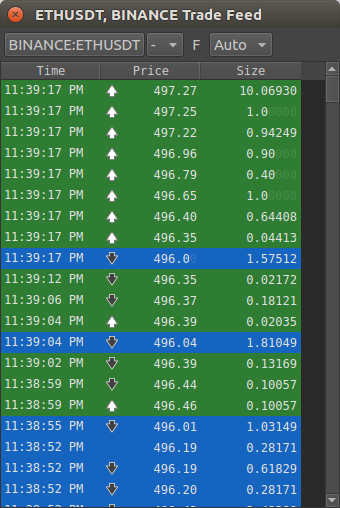
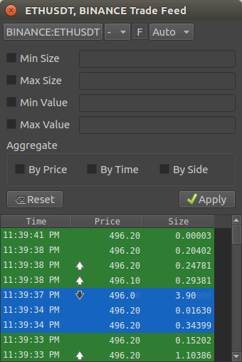

Trade Feed window¶
Open the Trade Feed window from Window > Extensions > Trade Feed menu item.
The Trade Feed window is available for selected crypto data feeds
- Coloring:
- A blue row is a trade executed at Bid
- A green row is a trade executed at Ask
- A white arrow is a price increase
- A black arrow is a price decrease
- Columns:
Time - in exchange time zone.
Displays the first trade time if By Time aggregation is used.
Price - the price the trade was executed.
Displays the volume-weighted average price if By Price aggregation is not used but another aggregation option is used.
Size - the volume of the trade.
Displays the sum of all aggregated trades if aggregation is used.
- Toolbar from left to right:
- Symbol - the symbol and exchange to show the order book of when clicked the Symbol Search window is displayed
- Symbol Link - the channel used for symbol linking
- Toggle Filter settings panel - show or hide the filter settings. Any filter is still applied when the panel is hidden
- Volume Decimals - the number of decimals to display size amounts with
Filter Settings panel¶
- Reset button
- Clear the filter settings and apply
- Apply button
- Apply the filter settings
Filter settings¶
- Min Size and Max Size
- The minimum and maximum size (volume) to display trades off. Minimum is inclusive, maximum is exclusive.
- Min Value and Max Value
- The minimum and the maximum value (volume × price) to display trades off. Minimum is inclusive, maximum is exclusive.
Filter settings are applied before aggregation settings.
Aggregation settings¶
- By Price
- If the incoming trade has a price difference of less than 0.00000001 when compared to the previous trade the incoming trades quantity is added to the last (previous) trade.
- By Time
If the incoming trade has a time equal to the previous trade (to the second) the incoming trades quantity is added to the last (previous) trade.
If By Price aggregation is not enabled a volume-weighted average price is calculated.
- By Side
If the incoming trade was executed on the same side (Bid or Ask) as the previous trade the incoming trades quantity is added to the last (previous) trade.
If By Price aggregation is not enabled a volume-weighted average price is calculated.
If By Side is not enabled the side is determined by all the aggregated trades. The side with the highest value wins.
Any combination of By Price, By Time, and By Side can be selected.